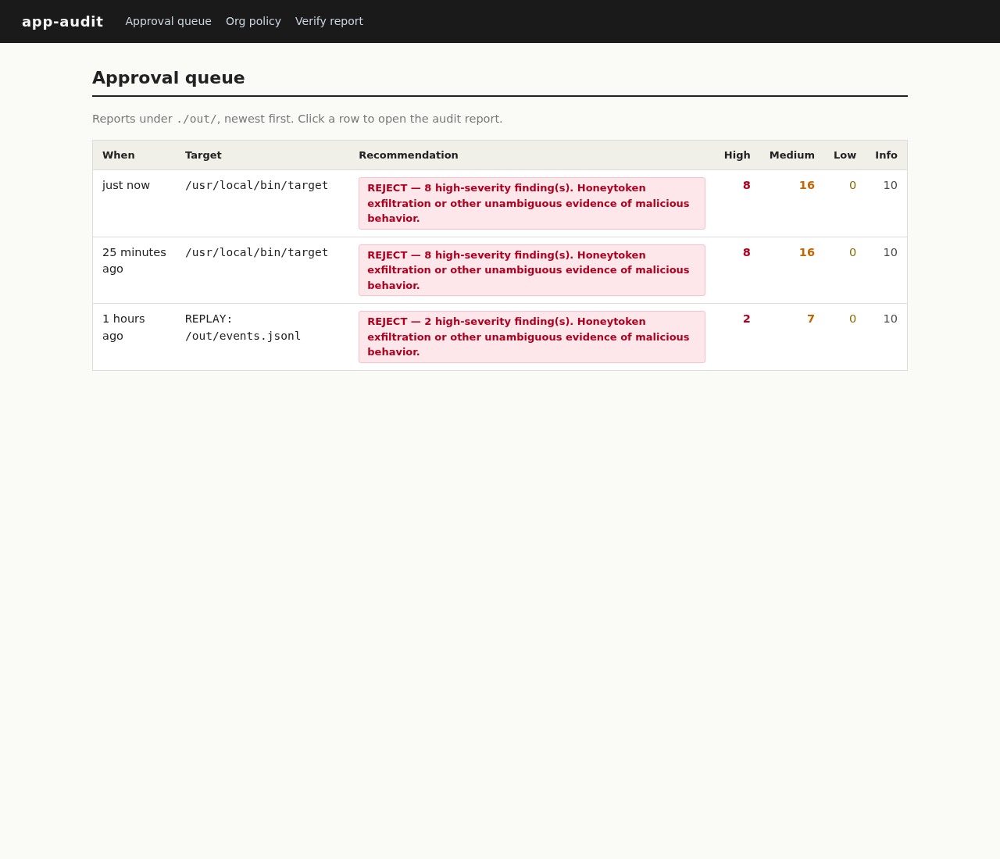
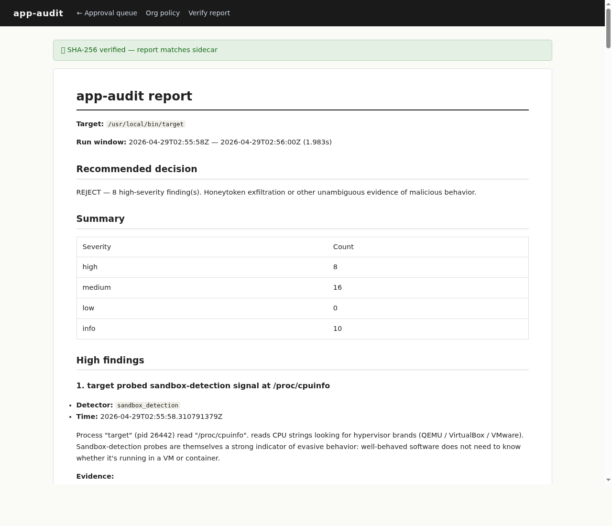
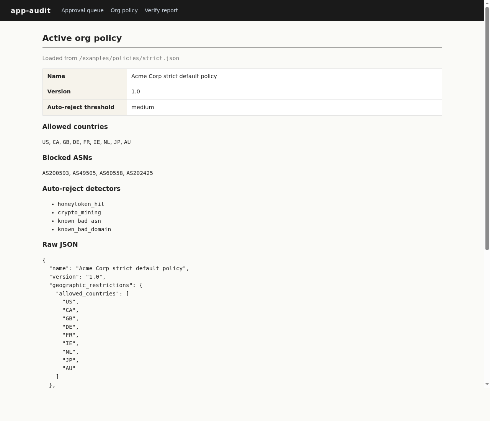
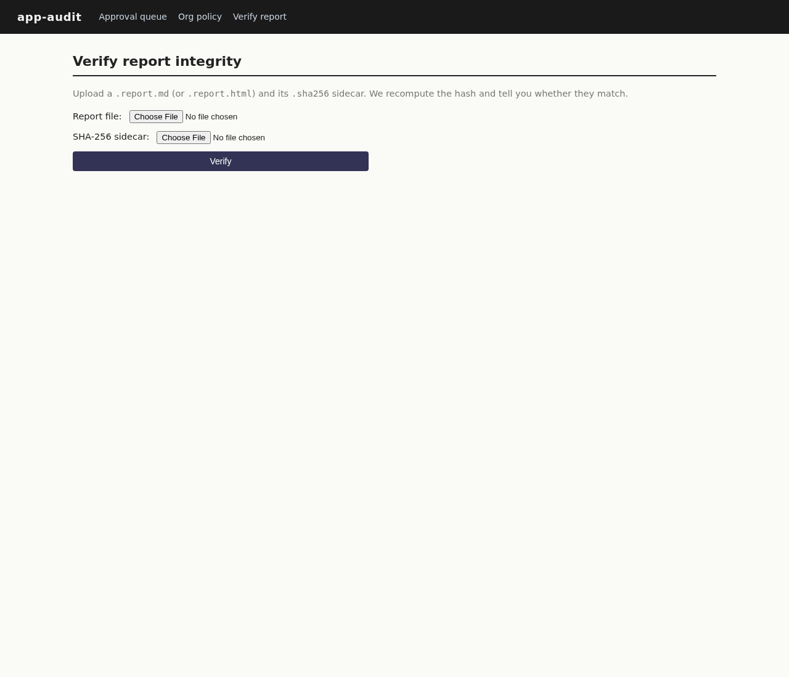

This is a private repository. Enter the PIN to view the project summary.
A misbehaving binary audited end-to-end in under 2 seconds
The built-in web UI provides a complete approval workflow — no CLI needed for reviewers.




/proc/cpuinfo looking for hypervisor brands (sandbox detection)/etc/machine-id (host fingerprinting)/root/.aws/credentials (planted honeytoken){"card":"4242424242424242","cvc":"123"} over TLS (PII leakage)/root/.bashrc (persistence probe)